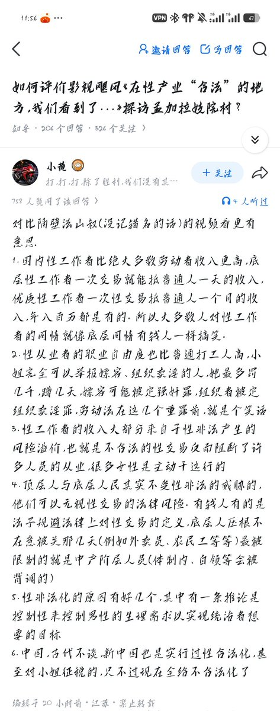

432InfantryRegiment
@432Ifantrygroup
@NaywJa 另外就是，这些人一想起卖淫女，就知道推特上的福利姬。而实际上大多数“性工作者”，根本就不会翻墙

432InfantryRegiment
@432Ifantrygroup
这人话里话外意思是影视飓风以偏概全，我国性工作者自由生活质量高，不值得同情
实际上开头就错，他只看到推上的福利姬，有没有看到长春洗浴城里两三百就能点一个的洗脚妹？他当然看不到或者说这就是他希望看到的，他实际上既不同情高收入性工作者，更不同情低收入没地位的性工作者，他只是想嫖娼而已 https://t.co/mk1QA1LcMi
778899
@NaywJa
778899
@NaywJa
@432Ifantrygroup 真的是很经典了 前段时间的那个在读学生发言更逆天 主体性 大女主之类的和🐔牵扯一起 完全看不懂